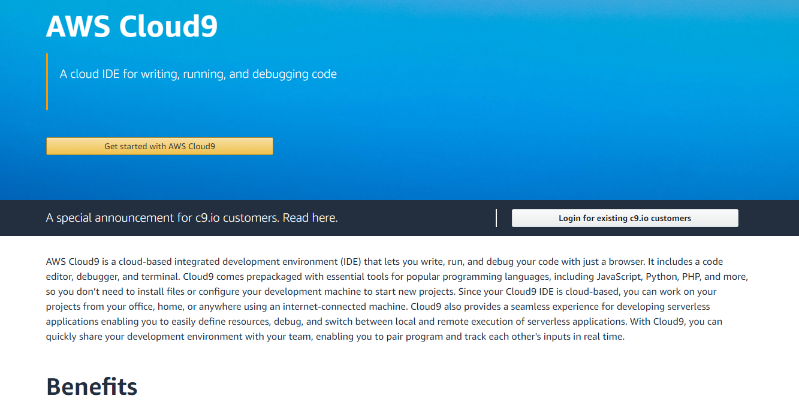
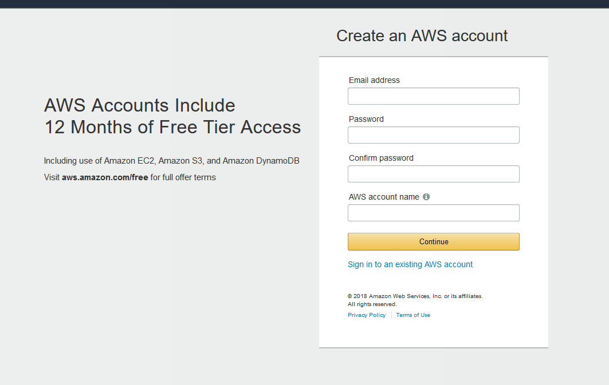
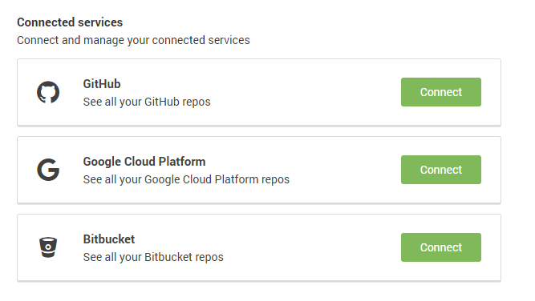

Create a Django & Python web application on Cloud 9
Why use cloud 9? If you’re a student studying any field of technology you’ll find plenty of reasons. Cloud 9 is an online integrated development environment (IDE). This means no matter where you are you can access your customized IDE and project files, and the whole thing is integrated with github and AWS! Let’s get started by creating a Cloud9 account:
- https://aws.amazon.com/cloud9/?origin=c9io
- Click “Get started with AWS Cloud9.” 
- Sign into your AWS account if you have one or create an AWS account. After this step you’ll be redirected to setup your Cloud9 account. 
- Input your credit card information.
- Link your github and AWS accounts if you’d like to, and verify your information and email address is valid. 
- You’re all done! Enjoy Cloud 9.
Let's Get Started with Python and Django!
Execute these following steps to create you first Django and Python App!
- Sign up for a basic free Cloud 9 account
- Create a workspace. You can name the workspace whatever you'd like and give it whatever description you'd like. The important part while creating a workspace is to choose the Django template. Once you've filled out the appropriate fields and selected the Django Template, click the create workspace button at the bottom of the page.
- At the bottom of your new Cloud 9 workspace is a tab that says bash which is followed by so other text. Click into this and type the following: django-admin startproject project . You can name your project whatever you'd like. The name of your project will take the place of 'project' in the given command. You have now created the template of you Django and Python application.
- On the left hand side of you cloud 9 screen is a file directory of your workspace files. When you created a project in the last step a new set of files were created under the directory of the name you gave your project. Navigate into the directory of the project you just created with the command line. Type the following command and then execute it: python manage.py startapp helloWorld
- you new app, helloWorld will have a directory with a .py file called views.py. Open this file up and paste in the following code. from django.http import HttpResponse def index(request): return HttpResponse("Hello, world.")
- in the same directory as the views.py file you just modified create a new file called urls.py. and type the following code into that new file. from django.conf.urls import url from . import views urlpatterns = [ url(r'^$', views.index, name='index'), ]
- Back in you project folder, the one the was created when you executed your first command prompt line, open up the urls.py file. Delete whatever code is in the file and copy paste the following code into the file. from django.conf.urls import include, url from django.contrib import admin urlpatterns = [ url(r'^polls/', include('polls.urls')), url(r'^admin/', admin.site.urls), ]
- Now, in your command prompt, make sure you are in the directory of your project and type the following command: python manage.py runserver $IP:$PORT . A link is generated at the end of text given in your command prompt window. Go to the link in a web browser. A page should be up with a red button in the middle of the screen that says open App. open the app. In the web browser add the following lines of text /helloWorld. And refresh your browser. You should be sent to the page and web app you created on the cloud 9 workspace. Congrats! You've just created a Python Django web application.